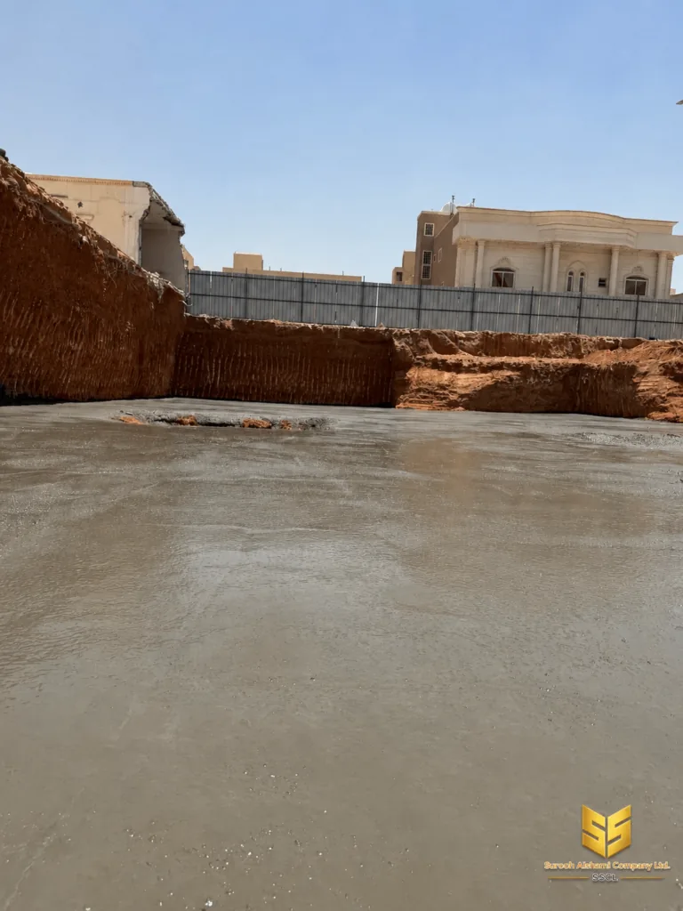

أساسات
صبة النظافة: متى تُستخدم وما سماكتها وتكلفتها
طبقة خرسانية رقيقة لا يلاحظها أحد بعد اكتمال المشروع، لكن غيابها يعني مشكلة تظهر بعد سنوات. هذه المقالة تشرح لماذا يطالب بها المهندس، وكيف تُنفَّذ، وكم تكلف.
صبة النظافة طبقة خرسانية رقيقة تُصب فوق سطح التربة المضغوطة، وقبل
صب القواعد أو الأساسات. سماكتها الشائعة تقارب 10 سم،
وهي في الغالب غير مسلحة أو مسلحة بدرجة بسيطة.
سُمّيت بذلك لأنها تنظّف الأسطح، وتُعادل الفوارق في الارتفاع، وتمنح القاعدة ثباتاً. وهي مهمة في المواصفات الهندسية، لأن إهمالها لا يظهر في يوم الصب، بل بعد سنوات.
ما هي صبة النظافة؟
صبة النظافة هي طبقة خرسانية رقيقة جدّة، تُصب على التربة بعد الحفر والتنظيف، وهدفها الأساسي هو توفير سطح مستوٍ ونظيف تُصب عليه القاعدة الخرسانية المسلحة.
لولاها لأصبحت القاعدة الخرسانية على تربة غير مستوية، فتفقد التوزيع المنتظم، وتظهر فراغات تحت القاعدة تسمح بدخول الماء والهواء.
وهي في التصنيف الهندسي تقع ضمن الأعمال التحضيرية للأساسات، ولا تُعتبر عنصراً إنشائياً محمّلاً، لكن غيابها يُبطل ضمانات كثيرة.
لماذا يطالب بها المهندس؟
لأربعة أسباب محددة، أي واحد منها كافٍ لوحده لتبرير وجودها:
- توفير سطح نظيف. التربة المفكوكة تعلق بالتسليح وتلوّث الخرسانة الطازجة قبل أن تصل إلى مكانها.
- تعادل الفوارق. تعطي الصب مستوياً ثابتاً، فلا تختل سماكة القاعدة ولا يتغيّر ارتفاعها من نقطة لأخرى.
- تمنع رفع الرطوبة. التربة الرطبة تسحب الماء من الخرسانة الحديثة، وهو ما يُضعف السطح السفلي للقاعدة.
- تحمي التسليح. تحمي حديد الأساس من التربة مباشرة حتى تُغطى بالخرسانة.
السماكة المطلوبة
السماكة ليست رقماً عشوائياً. المواصفات تحدد بين
5 و10 سم في أغلب الحالات، وتُختار حسب
حالة التربة وعمق الحفر وطريقة التنفيذ.
| السماكة | متى تُستخدم |
|---|---|
| 5 سم | تربة مستوية وجافة، وأعمال إنارة محيطية |
| 7.5 سم | الحالة الأكثر شيوعاً في الفلل السكنية |
| 10 سم | تربة رطبة أو فوارق كبيرة، وفوق طبقات حجرية |
| أكثر من 10 سم | تُراجَع مع المهندس؛ قد تعني خطأ في منسوب الحفر |
متى تُستخدم ومتى لا تُستخدم؟
تُستخدم صبة النظافة في كل مشروع قاعدته خرسانية مسلحة ومصبوبة على التربة مباشرة. وهذا يشمل معظم الفلل والأدوار السكنية داخل الرياض.
أما في الحالات التالية فلا تُستخدم، أو تحل محلها وسيلة أخرى:
- عند الأساسات المرتكزة على صبغة خرسانية أو على حوائط شيش.
- عند القواعد الموضوعة على طبقة عزل ممتدة، فالعزل يحل محل الصبة.
- في الأعمال المعمارية الصغيرة كالممرات والحواجز الخارجية.
خطوات التنفيذ
التنفيذ الصحيح يتم على ست خطوات بالترتيب. الترتيب هنا ليس شكلياً، لأن كل خطوة تفتح التي تليها ولا يمكن إرجاعها.
- تنظيف القاع. يُزال كل الحصى والركام والفائض من الحفر، ويُشكل قاع الحفر حتى يتماسك.
- دمك التربة. يُدمك سطح التربة، ثم يُفحص منسوبه بميزان الماء قبل تركيب القوالب.
- تركيب القوالب. تُركَّب قوالب خشبية أو معدنية على أطراف الحفر لتحديد السماكة المطلوبة.
- صب الخرسانة. تُصب الخرسانة في طبقة واحدة متساوية، ثم تُسوّى بالمسحاة حتى تستوي.
- المعالجة. تُغطّى الصبة، ويُشترط عدم الصب فوقها قبل مرور فترة المعالجة المطلوبة.
- التسوية النهائية. يُفحص السطح وتُعالَج أي بقع، ثم يبدأ تركيب حديد القاعدة.
ملاحظات من مواقع البناء في الرياض
المنطقة الجافة تعني أن معظم صبة النظافة في الرياض ليست في الرطوبة، بل في ثلاثة أمور أخرى نراها بشكل متكرر.
الأول هو تربة البناء المستوردة من خارج الموقع، وهي تربة رملية سائبة لا تصلح للتسوية المدمجة إلا بعد ترطيبها. الصب فوق تربة جافة سائبة يترك فراغات أسفل الصبة.
الثاني هو التسرّب من الحفر. في المواقع المنخفضة أو القريبة من المجاري، يدخل ماء الأمطار إلى الحفر قبل الصب، فيتعطّل العمل يوماً أو أكثر، وتُعاد صبة الأساس كاملة.
الثالث هو الضغط الزمني قبل موسم الأمطار، حين تسارع جميع مشاريع الرياض على صب أسساتها دفعة واحدة، فتزدحم مخارج الخرسانة الجاهزة ويصبح ضمان موعد الصب أصعب من ضمان جودة الصب.

قبل الصب بساعة
أبلغ المقاول بوقت كافٍ لتجهيز القاع. الصبة تحتاج وقتاً لتسوية ومسح، ثم فترة معالجة قصيرة قبل أن يُمشي أحد فوقها. الطلب المفاجئ يترك النتيجة غير مستوية.
التكلفة التقريبية
تكلفة صبة النظافة تُحسب بالمتر المكعب، وهي أرخص بند خرساني في المشروع كله. لكن لا تقارن سعر المتر فقط، بل السعر شاملاً كل ما يلزم للوصول إلى الصبة.
| البند | ملاحظات |
|---|---|
| الخرسانة نفسها | المتر المكعب حسب الدرجة المطلوبة للمشروع |
| أجر النقل والصب | يتغير ببعد موقع المشروع عن أقرب مخرج |
| القوالب والتسوية | عمل بشري لا يظهر في فاتورة الخرسانة وحدها |
| أعمال التربة | تنظيف ودك وتجهيز القاع قبل الصب |
| الحد الأدنى للطلب | كثير من الورش تشترط حداً أدنى لحجم الطلبية، لذلك تُجمع الصبة مع أعمال أخرى خرسانية في الموقع الواحد |
الصب المنفرد مكلف
طلبية صغيرة منفردة لصبة النظافة تتحمل كامل أجرة النقل والشاحنة لأجل كمية محدودة. في المواقع التي فيها أكثر من عملية خرسانية متقاربة، من الأفضل جدولة هذه الأعمال في يوم واحد.
التفاصيل التي تُنتج صبة سليمة
الفرق بين صبة مقبولة وأخرى ممتازة ليس في كمية الخرسانة، بل في أربعة تفاصيل صغيرة.
- استقامة القوالب. القالب المائل ينتج حافة مائلة تسرب ماء الصب إلى التربة قبل أن يتماسك.
- تثبيت القوالب. القوالب الخشبية غير المسمّرة تتحرك مع ضغط الصب.
- المسح الفوري. المسح المتأخر يترك السطح خشناً ويكشف الفوارق التي كان يجب تسويتها.
- تنعيم الحواف. الحافة الحادة عند التقاء الصبة بالقالب تخلق فراغاً خطياً يمتد بطول الحائط.
ملاحظة أخرى تخصّ صبّ الخرسانة: الصبة تُصب عادة بخلطة أقل مقاومة من خرسانة القاعدة، لأن وظيفتها تختلف. الخلطة القوية هنا لا تفيد، بل تكلّف. والعكس صحيح أيضاً، فلا يجوز استخدام خرسانة أضعف مما تتطلبه المواصفات.
وأخيراً: صبة النظافة ليست بديلاً عن دراسة التربة ولا عن مخطط الأساسات. هي طبقة تنفيذية مكمّلة، تُصمَّم تفاصيلها بعد أن يُحسم شكل الأساس ومساره.
أخطاء شائعة في تنفيذ صبة النظافة
- الصب فوق تربة غير مدكوكة. ينتج فراغات أسفل الصبة لا تُكتشف إلا عند فتح الأرض.
- تسوية الصبة بالماء فقط. الماء يذيب التراب ويملأ الفراغات، لكنه لا يكوّن سطحاً متماسكاً.
- تركيب حديد الأساس قبل جفاف الصبة. المشي على الصبة أو وضع الحديد عليها يخدشها ويُحدث فراغاً تحت التسليح.
- تجاوز السماكة المتفق عليها. السماكة الزائدة تعني تكلفة زائدة، والناقصة تعني تسوية غير مكتملة.
- عدم تسجيل الكمية المستهلكة. سجل الكمية في محضر صب يسمح بمطابقة الفاتورة فعلياً بما صُب في الموقع.
أهم ما في هذه المقالة
- صبة النظافة طبقة رقيقة، لكن غيابها يُبطل ضمانات الأساس.
- السماكة الشائعة بين 5 و10 سم وتُحدَّد بالحالة لا بالعادة.
- الترتيب في التنفيذ غير قابل للاختصار ولا للتأجيل.
- المشكلة الأولى في الرياض هي تربة البناء المستوردة.
- الحد الأدنى للطلبية يجعل الصب المنفرد مكلفاً.
هذه المقالة تغطي الصبة وحدها. ولمعرفة أين تقع ضمن تسلسل المشروع كاملاً، اقرأ مراحل تنفيذ المشروع.
عندك موقع في الرياض وتحتاج عرض سعر؟
أرسل لنا تفاصيل المشروع، ونعود إليك بعرض سعر مبدئي.